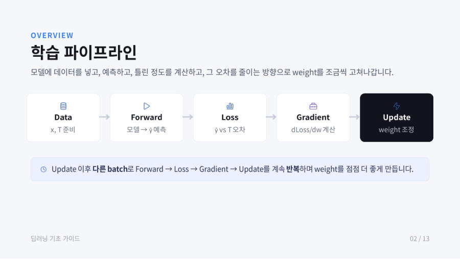

← 보드딥러닝이 뭐예요 + 학습 과정 큰 그림 · 2/11
학습 5단계 한눈에 보기 ★★★
학습은 아래 다섯 단계를 한 바퀴로 하고, 이 바퀴를 계속 돌려요. 강의자료(딥러닝 모델 Training 과정)의 첫 그림이에요.

| 단계 | 하는 일 | 찌개 비유 |
|---|---|---|
| 1. Data | 입력 x와 정답 T를 준비 | 재료와 "목표 맛" |
| 2. Forward | x를 모델에 넣어 예측값 ŷ을 얻음 | 끓여서 간을 봄 |
| 3. Loss | ŷ과 T의 차이를 숫자 하나로 | 목표 맛과 얼마나 다른가 |
| 4. Gradient | 각 weight를 바꾸면 loss가 어느 쪽으로 변하는지 계산 | 소금을 늘릴까 줄일까 방향 확인 |
| 5. Update | loss가 줄어드는 방향으로 weight를 조금 조정 | 소금을 조금 넣거나 뺌 |
| 반복 | 다른 batch로 2~5를 계속 | 맛이 맞을 때까지 |
ŷ은 "와이 햇"이라고 읽고 예측값이라는 뜻이에요. 정답 T(target)와 구분하려고 모자를 씌워요. Forward는 "앞으로 나아간다"는 뜻으로, 입력이 모델의 층을 앞쪽에서 뒤쪽으로 차례로 통과해서 예측값이 나오기 때문이에요. 이 과정을 순전파(forward propagation)라고도 해요.
외우기 팁
"데이터 → 예측 → 오차 → 방향 → 수정"이에요. 영어로는 Data → Forward → Loss → Gradient → Update예요. 강의자료 마지막 장 요약도 "데이터 → 예측 → 오차 → 개선, 이 루프가 곧 학습"이에요.
시험엔 이렇게 써요 — 이렇게 고르세요
학습은 Forward(예측) → Loss(오차 계산) → Gradient(기울기 계산) → Update(weight 조정) 순서를 다른 batch로 반복하는 과정이다. 순서가 선택지에서 섞여 있으면 "예측이 먼저, 고치는 건 마지막"이라는 상식으로 고르세요.
잠깐 확인 — Loss를 계산하려면 무엇과 무엇이 필요한가요?
모델이 낸 예측값 ŷ과 진짜 정답 T예요. 둘의 차이가 loss예요.
덮고 10초 — 말해 보기
화면을 가리고 "학습 5단계 한눈에 보기 ★★★"을(를) 친구에게 설명하듯 한 문장으로 말해 보세요. 막히면 위의 빨간 칸만 다시 보고 넘어가요.
다음 카드 → 데이터는 어떻게 생겼나 — feature와 target
자료: 4주차 · 딥러닝 모델 Training 과정.pdf, Week04 Autograd_Loss_Optimizer.ipynb · 빅데이터04(4주차) 녹취, 빅데이터03·07 녹취 일부